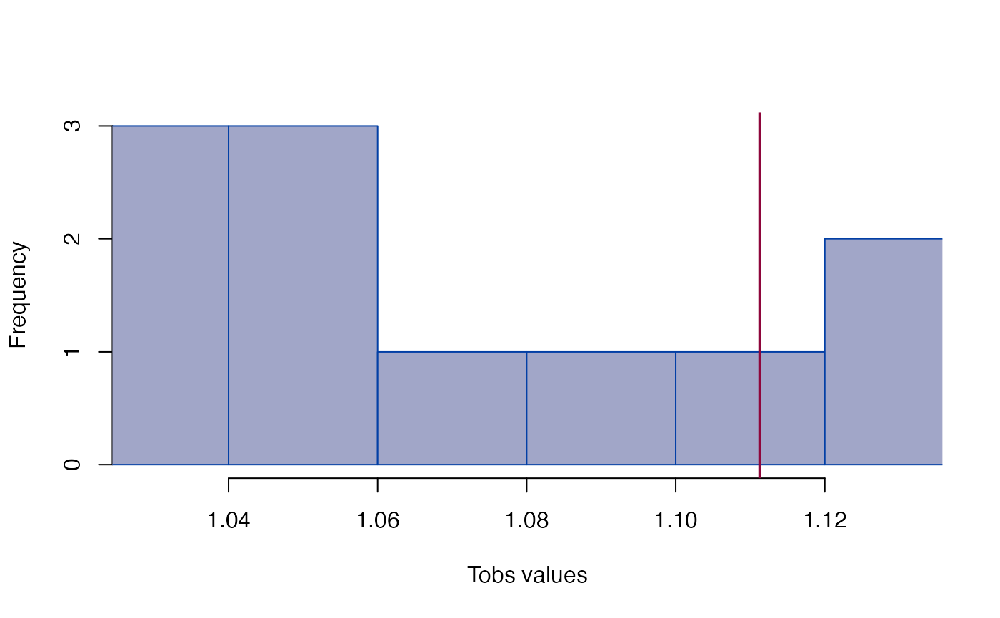
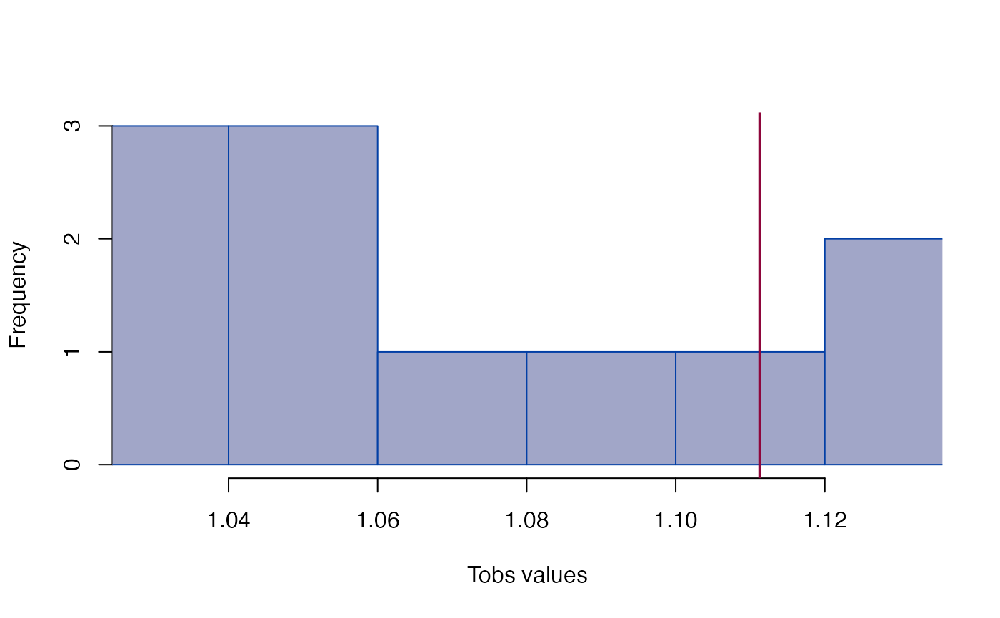

Growth difference
edma_gdm.RdGrowth matrix and growth difference matrix based inference based on Lele and Richtsmeier (1992, 1995).
Usage
edma_gm(a1, a2, ...)
get_gm(object, ...)
# S3 method for edma_gm
get_gm(object, sort=FALSE, level=0.95,
what="all", ...)
edma_gdm(a1, a2, b1, b2, ...)
get_gdm(object, ...)
# S3 method for edma_gdm
get_gdm(object, sort=FALSE, level=0.95,
what="all", ...)
# S3 method for edma_gm
print(x, ...)
# S3 method for edma_gdm
print(x, ...)
# S3 method for edma_gm
global_test(object, ...)
# S3 method for edma_gdm
global_test(object, ...)
# S3 method for edma_gdm
landmarks(x, ...)
# S3 method for edma_gdm
dimensions(x, ...)
# S3 method for edma_gdm
plot_ord(x, ...)
# S3 method for edma_gdm
plot_clust(x, ...)Arguments
- a1, a2, b1, b2
EDMA fit object to compare growths.
- x, object
an EDMA GM or GDM objects.
- sort
logical, if stacked distances are to be sorted, see Examples.
- level
numeric, between 0 and 1, alpha level for confidence interval.
- what
what part of the ford differences to return:
"all","less"or"greater"than 1,"signif"or"nonsignif".- ...
other arguments passed to
edma_fdm, likeref_denom.
Details
Growth matrix (GM) is calculated as the ratio of form matrices (FM) from the numerator and denominator objects following Lele and Richtsmeier (1992, 1995): GM(A1,A2) = FM(A2)/FM(A1). Form matrices are formed as pairwise Euclidean distances between landmarks from EDMA fit objects using the estimated mean forms.
Growth difference matrix (GDM) is calculated as GDM(A1,A2,B1,B2) = GM(B1,B2) / GM(A1,A2).
Inference and visualization is similar to how it is done for FDMs.
Value
edma_gm compares two EDMA fit objects and calculates GM.
edma_gdm compares 4 EDMA fit objects and calculates GDM.
The plot_ord and plot_clustproduce plots based on dissimilarities among specimens
in the 2 or 4 objects (for GM and GDM, respectively).
References
Lele, S. R., and Richtsmeier, J. T., 1992. On comparing biological shapes: detection of influential landmarks. American Journal of Physical Anthropology 87:49--65. <doi:10.1002/ajpa.1330870106>
Lele, S. R., and Richtsmeier, J. T., 1995. Euclidean distance matrix analysis: confidence intervals for form and growth differences. American Journal of Physical Anthropology 98:73--86. <doi:10.1002/ajpa.1330980107>
Examples
file_a1 <- system.file("extdata/growth/CZEM_wt_global.xyz",
package="EDMAinR")
file_a2 <- system.file("extdata/growth/CZP0_wt_global.xyz",
package="EDMAinR")
l <- c("amsph", "bas", "loci", "lpto", "lsqu",
"lsyn", "roci", "rpto", "rsqu", "rsyn")
a1 <- read_xyz(file_a1)[l,,]
a2 <- read_xyz(file_a2)[l,,]
a1
#> EDMA data: Crouzon unaffected embryonic mouse
#> 10 landmarks, 3 dimensions, 31 specimens
a2
#> EDMA data: Crouzon unaffected newborn mouse
#> 10 landmarks, 3 dimensions, 11 specimens
fit_a1 <- edma_fit(a1, B=10)
fit_a2 <- edma_fit(a2, B=10)
## --- growth matrix ---
gm <- edma_gm(a1=fit_a1, a2=fit_a2, B=10)
gm
#> EDMA growth matrix
#> Call: edma_gm(a1 = fit_a1, a2 = fit_a2, B = 10)
#> 10 bootstrap runs (ref: denominator)
#> Tobs = 1.259, p < 2.22e-16
global_test(gm)
#>
#> Bootstrap based EDMA G test
#>
#> data: growth matrix
#> G -value = 1.259, B = 10, p-value < 2.2e-16
#>
head(confint(gm))
#> 2.5% 97.5%
#> bas-amsph 1.098644 1.141419
#> loci-amsph 1.093283 1.139365
#> lpto-amsph 1.119315 1.158426
#> lsqu-amsph 1.128025 1.176207
#> lsyn-amsph 1.103205 1.168445
#> roci-amsph 1.087673 1.138171
head(get_gm(gm))
#> row col dist lower upper
#> 1 bas amsph 1.116726 1.098644 1.141419
#> 2 loci amsph 1.112833 1.093283 1.139365
#> 3 lpto amsph 1.144189 1.119315 1.158426
#> 4 lsqu amsph 1.149705 1.128025 1.176207
#> 5 lsyn amsph 1.139680 1.103205 1.168445
#> 6 roci amsph 1.110515 1.087673 1.138171
head(get_gm(gm, sort=TRUE, decreasing=TRUE))
#> row col dist lower upper
#> 45 rsyn rsqu 1.196344 1.185377 1.223331
#> 31 lsyn lsqu 1.194661 1.173958 1.220995
#> 41 rsqu roci 1.159037 1.145538 1.189303
#> 35 rsyn lsqu 1.155865 1.135645 1.180478
#> 19 lsqu loci 1.155629 1.135749 1.182256
#> 16 rsqu bas 1.155440 1.147620 1.176627
head(get_gm(gm, sort=TRUE, decreasing=FALSE))
#> row col dist lower upper
#> 28 rpto lpto 0.9502249 0.8915535 1.016564
#> 34 rsqu lsqu 1.0364970 1.0052353 1.060185
#> 21 roci loci 1.0365211 1.0288177 1.057644
#> 27 roci lpto 1.0423805 1.0187448 1.072097
#> 22 rpto loci 1.0515532 1.0248673 1.082759
#> 29 rsqu lpto 1.0610708 1.0386767 1.084252
plot_ord(gm)
 plot_clust(gm)
plot_clust(gm)
 plot_test(gm)
plot_test(gm)
 plot_ci(gm)
plot_ci(gm)
 plot_2d(gm)
plot_2d(gm)
 if (interactive())
plot_3d(gm)
## --- growth difference matrix ---
file_b1 <- system.file("extdata/growth/CZEM_mut_global.xyz",
package="EDMAinR")
file_b2 <- system.file("extdata/growth/CZP0_mut_global.xyz",
package="EDMAinR")
b1 <- read_xyz(file_b1)[l,,]
b2 <- read_xyz(file_b2)[l,,]
b1
#> EDMA data: Crouzon mutant embryonic mouse
#> 10 landmarks, 3 dimensions, 18 specimens
b2
#> EDMA data: Crouzon mutant newborn mouse
#> 10 landmarks, 3 dimensions, 11 specimens
fit_b1 <- edma_fit(b1, B=10)
fit_b2 <- edma_fit(b2, B=10)
gdm <- edma_gdm(a1=fit_a1, a2=fit_a2, b1=fit_b1, b2=fit_b2, B=10)
gdm
#> EDMA growth difference matrix
#> Call: edma_gdm(a1 = fit_a1, a2 = fit_a2, b1 = fit_b1, b2 = fit_b2,
#> B = 10)
#> 10 bootstrap runs (ref: denominator)
#> Tobs = 1.1113, p = 0.18182
global_test(gdm)
#>
#> Bootstrap based EDMA G test
#>
#> data: growth difference matrix
#> G -value = 1.1113, B = 11, p-value = 0.1818
#>
head(confint(gdm))
#> 2.5% 97.5%
#> bas-amsph 0.9911251 1.031443
#> loci-amsph 0.9790524 1.026019
#> lpto-amsph 0.9900137 1.020947
#> lsqu-amsph 0.9691114 1.030874
#> lsyn-amsph 0.9797580 1.047181
#> roci-amsph 0.9784894 1.021592
head(get_gdm(gdm))
#> row col dist lower upper
#> 1 bas amsph 0.9871097 0.9911251 1.031443
#> 2 loci amsph 0.9962675 0.9790524 1.026019
#> 3 lpto amsph 0.9935320 0.9900137 1.020947
#> 4 lsqu amsph 1.0057657 0.9691114 1.030874
#> 5 lsyn amsph 0.9844980 0.9797580 1.047181
#> 6 roci amsph 0.9981683 0.9784894 1.021592
head(get_gdm(gdm, sort=TRUE, decreasing=TRUE))
#> row col dist lower upper
#> 39 rsyn lsyn 1.040292 0.9229798 1.0193787
#> 18 lpto loci 1.013272 0.9588606 0.9957311
#> 40 rpto roci 1.010858 0.9593915 1.0008006
#> 36 roci lsyn 1.010448 0.9712872 1.0100928
#> 21 roci loci 1.008071 0.9627390 1.0074367
#> 9 rsyn amsph 1.007449 0.9491394 1.0356831
head(get_gdm(gdm, sort=TRUE, decreasing=FALSE))
#> row col dist lower upper
#> 43 rsqu rpto 0.9361207 1.0475283 1.090134
#> 25 lsqu lpto 0.9485414 1.0303444 1.085886
#> 29 rsqu lpto 0.9569724 1.0203573 1.071110
#> 33 rpto lsqu 0.9666629 1.0019449 1.087982
#> 41 rsqu roci 0.9766552 0.9958376 1.063174
#> 19 lsqu loci 0.9791661 0.9844085 1.061178
plot_ord(gdm)
if (interactive())
plot_3d(gm)
## --- growth difference matrix ---
file_b1 <- system.file("extdata/growth/CZEM_mut_global.xyz",
package="EDMAinR")
file_b2 <- system.file("extdata/growth/CZP0_mut_global.xyz",
package="EDMAinR")
b1 <- read_xyz(file_b1)[l,,]
b2 <- read_xyz(file_b2)[l,,]
b1
#> EDMA data: Crouzon mutant embryonic mouse
#> 10 landmarks, 3 dimensions, 18 specimens
b2
#> EDMA data: Crouzon mutant newborn mouse
#> 10 landmarks, 3 dimensions, 11 specimens
fit_b1 <- edma_fit(b1, B=10)
fit_b2 <- edma_fit(b2, B=10)
gdm <- edma_gdm(a1=fit_a1, a2=fit_a2, b1=fit_b1, b2=fit_b2, B=10)
gdm
#> EDMA growth difference matrix
#> Call: edma_gdm(a1 = fit_a1, a2 = fit_a2, b1 = fit_b1, b2 = fit_b2,
#> B = 10)
#> 10 bootstrap runs (ref: denominator)
#> Tobs = 1.1113, p = 0.18182
global_test(gdm)
#>
#> Bootstrap based EDMA G test
#>
#> data: growth difference matrix
#> G -value = 1.1113, B = 11, p-value = 0.1818
#>
head(confint(gdm))
#> 2.5% 97.5%
#> bas-amsph 0.9911251 1.031443
#> loci-amsph 0.9790524 1.026019
#> lpto-amsph 0.9900137 1.020947
#> lsqu-amsph 0.9691114 1.030874
#> lsyn-amsph 0.9797580 1.047181
#> roci-amsph 0.9784894 1.021592
head(get_gdm(gdm))
#> row col dist lower upper
#> 1 bas amsph 0.9871097 0.9911251 1.031443
#> 2 loci amsph 0.9962675 0.9790524 1.026019
#> 3 lpto amsph 0.9935320 0.9900137 1.020947
#> 4 lsqu amsph 1.0057657 0.9691114 1.030874
#> 5 lsyn amsph 0.9844980 0.9797580 1.047181
#> 6 roci amsph 0.9981683 0.9784894 1.021592
head(get_gdm(gdm, sort=TRUE, decreasing=TRUE))
#> row col dist lower upper
#> 39 rsyn lsyn 1.040292 0.9229798 1.0193787
#> 18 lpto loci 1.013272 0.9588606 0.9957311
#> 40 rpto roci 1.010858 0.9593915 1.0008006
#> 36 roci lsyn 1.010448 0.9712872 1.0100928
#> 21 roci loci 1.008071 0.9627390 1.0074367
#> 9 rsyn amsph 1.007449 0.9491394 1.0356831
head(get_gdm(gdm, sort=TRUE, decreasing=FALSE))
#> row col dist lower upper
#> 43 rsqu rpto 0.9361207 1.0475283 1.090134
#> 25 lsqu lpto 0.9485414 1.0303444 1.085886
#> 29 rsqu lpto 0.9569724 1.0203573 1.071110
#> 33 rpto lsqu 0.9666629 1.0019449 1.087982
#> 41 rsqu roci 0.9766552 0.9958376 1.063174
#> 19 lsqu loci 0.9791661 0.9844085 1.061178
plot_ord(gdm)
 plot_clust(gdm)
plot_clust(gdm)
 plot_test(gdm)

plot_ci(gdm)
plot_2d(gdm) # need real data
plot_test(gdm)

plot_ci(gdm)
plot_2d(gdm) # need real data
 if (interactive())
plot_3d(gdm)
if (interactive())
plot_3d(gdm)